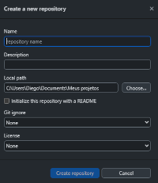
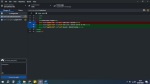

Git e GitHub são coisas diferentes, de forma grosseira GIT é um software de controle de versão (VCS) e GitHub é uma plataforma de redes sociais pra programadores.
Software para versionamento de software (controle de versões). Um exemplo é que você tenha criado uma página web em HTML e CSS, então cria uma pasta pra organizar o projeto, se está funcionando ela é salva, em outro momento alguma melhoria é implementada, assim pra cada modificação é criada uma modificação. No caso existem várias versões, aquela básica, a que melhorou, a que não funcionou por uma falha no programa. Nesse caso várias versões estão criadas, porém alguns problemas podem ocorrer, principalmente quando trabalhado em equipe, pois são muitas pessoas atuando em partes diferentes do software. Pra isso não virar bagunça é necessário um gerenciador de versões, no caso o GIT é esse software.
Importante ressaltar que o GIT não é o único, porém o mais popular, mas vamos entender como é feito o controle de versões. Quando alguém faz uma atualização no repositório local é feito um commit, depois um push para o repositório remoto (se tratando do VCS distribuído - GIT).
O GIT foi criado em 2005 pelo criador do kernel do Linux, foi feito para atuar melhor que outros versionadores da época. A sigla definida por ele pode ser:
O GitHub é o repositório remoto, relembrando a sequência: usuário edita o código-fonte, faz um commit pro GIT (repositório local) e depois um push pro GitHub (repositório remoto).
Nesse repositório é possível armazenar, contribuir, ter uma referência pra oportunidades de trabalho, etc. Se resume também de uma grande comunidade para os programas open source.
Criar uma conta no é simples, basta acessar o link e fazer seu cadastro gratuito.
Criado em 2008 por um grupo de 4 pessoas, tem um código proprietário baseado no Git, porém foi comprado pela Microsoft em 2018 por míseros US$ 7,5 bilhões.

O primeiro passo é abrir o GitHub Desktop e criar um novo repositório (Create a New Repository on your hard drive...)

Depois de clicar, outra tela exibirá para que sejam preenchidas as informações do projeto e será explicado um a um.
Nome do seu repositório, evite colocar caracteres especiais e espaços.
Descrição da sua escolha, escreva uma breve apresentação do projeto, pra que será usado e principais características.
Local que o projeto será armazenado no computador, vale ressaltar que por organização é importante deixar tudo numa mesma pasta. Ao fazer isso uma pasta com nome escolhido é criada nesse local. Clique no check box abaixo de local PATH, assim a descrição será exibida assim que o repositório for selecionado.
Deixe em branco, pois serve para o GIT ignorar se algum determinado tipo de arquivo for modificado.
Essa parte é muito importante na questão jurídica, aqui é determinado o que outro usuário pode fazer com seu arquivo, você pode conferir os tipos de licenças aqui.
Depois de tudo preenchido é só clicar em criar. Essa ação criará uma pasta no diretório indicado em loca PATH. Dessa é só criar ou colocar seu projeto novo na pasta citada. Toda vez que houver alguma alteração nos arquivos dessa pasta o GitHub Desktop irá indicar uma mudança e está pronto para fazer a atualização no repositório local e também o remoto, conforme imagem.
Na demonstração apresentada vemos uma mudança no repositório selecionado, nesse caso basta colocar um título da mudança e uma descrição, aí é só fazer um commit (atualização do repositório local). Depois um push para atualização do repositório remoto.